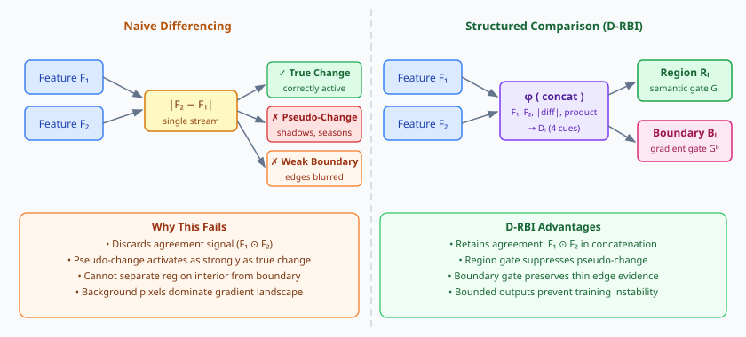
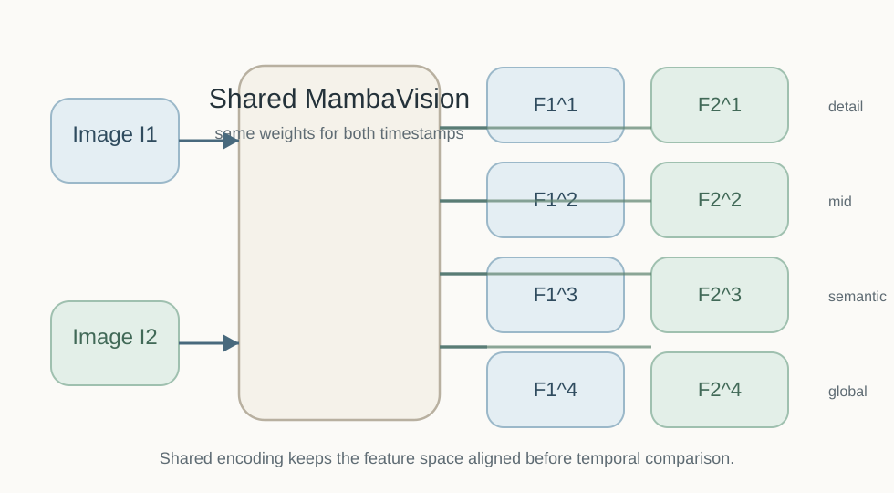
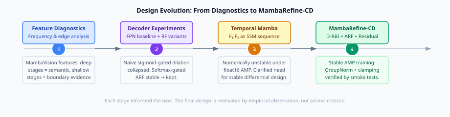
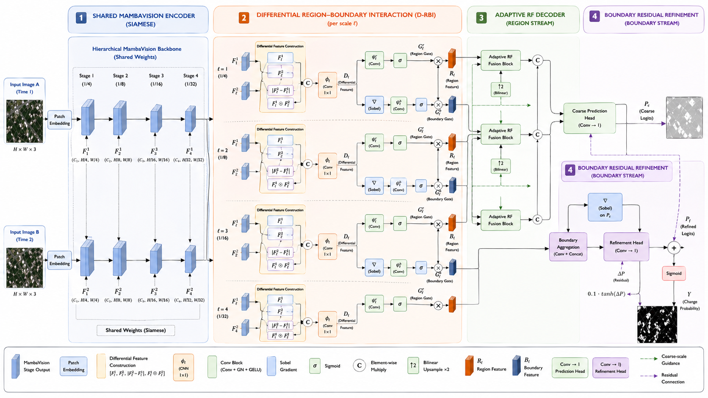
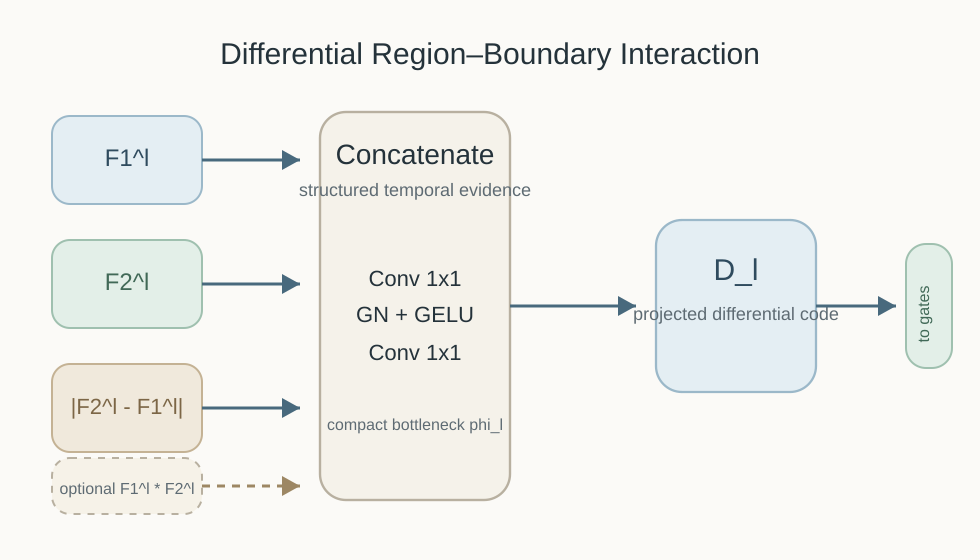
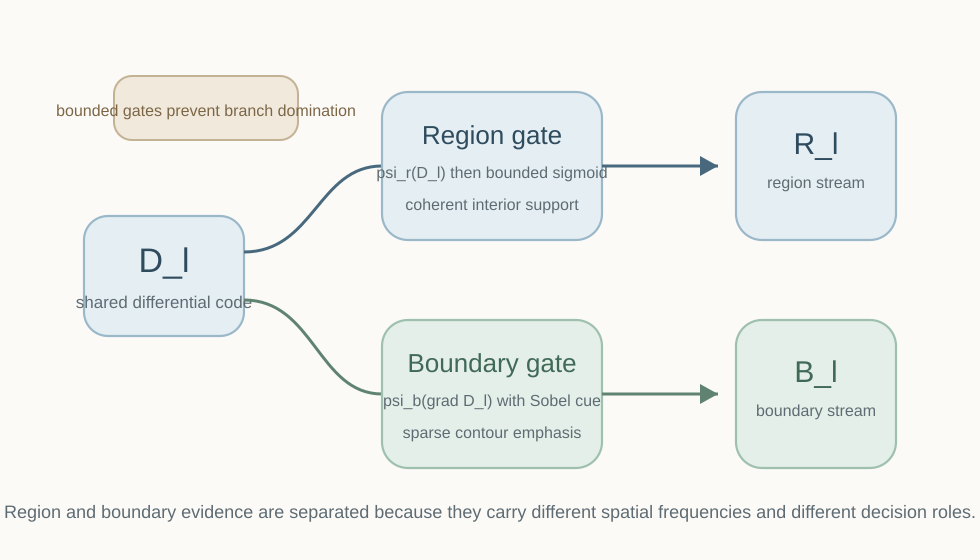
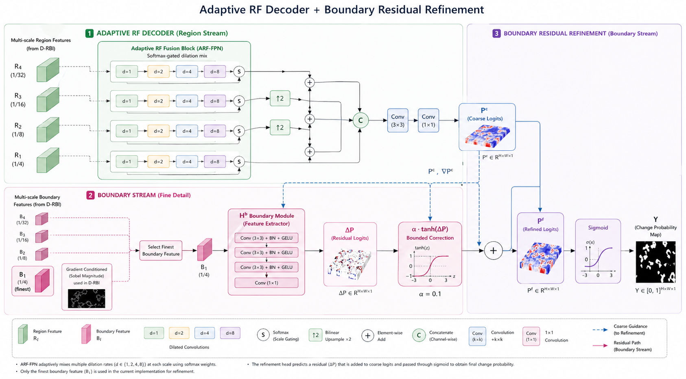
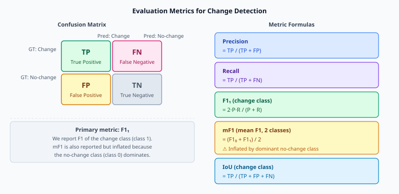

A principled framework that decomposes pairwise feature differences into spatially-aware region and boundary streams, then refines coarse predictions with a bounded residual correction.
Problem Statement
Change detection from bitemporal satellite imagery is fundamentally hard. Three failure modes recur across methods that rely on pixel-wise feature subtraction.
Vegetation phenology, shadows, and sensor noise produce large \(|F_2^l - F_1^l|\) responses at non-change locations, causing false positives.
Simple subtraction blurs gradients at change boundaries. The resulting predictions are spatially coarse, underperforming at high-frequency edges.
Standard FPN decoders apply a single dilation rate per scale. Small buildings need local context; large fields need wide receptive fields. One fixed rate cannot serve both.
Region-interior change evidence and boundary-edge evidence live in different spatial frequency bands. Mixing them in a single feature degrades both tasks.

Figure 1. Left: three failure modes of naive feature subtraction. Right: how D-RBI decomposes the difference into separate region and boundary streams.
Analysis
Let \(F_1^l, F_2^l \in \mathbb{R}^{H_l \times W_l \times C_l}\) be encoder features at scale \(l\) for images \(I_1\) and \(I_2\). Naive methods form:
This has two fundamental problems. First, it discards the sign of change and cannot distinguish gain from loss. Second, it provides no mechanism to separate smooth interior change from sharp boundary change. MambaRefine-CD replaces this with a learned, context-aware fusion:
Key insight: The four-component concatenation \([F_1, F_2, |F_2-F_1|, F_1 \odot F_2]\) encodes both unilateral context and bilateral interaction. The bottleneck \(\phi_l\) compresses this to a single difference tensor \(D_l\) that is subsequently decomposed into region and boundary streams by learned, bounded gates.
Encoder
MambaVision extends the Vision Mamba architecture with a hybrid CNN–SSM design, producing four resolution levels that combine local convolutional inductive bias with long-range state-space modeling.

Figure 2. A single MambaVision encoder processes both images with shared weights. Scale-matched feature pairs \((F_1^l, F_2^l)\) feed into per-scale D-RBI modules.
The state-space model at the core of each Mamba block computes:
where \(x_t\) is the input token, \(h_t\) is the hidden state, and \(A_t, B_t, C_t\) are input-dependent parameters (selective SSM). This gives each feature token access to all prior spatial context along the scan path without the quadratic cost of self-attention.
| Variant | Params (M) | FLOPs (G) | ImageNet Top-1 | Stage channels |
|---|---|---|---|---|
| MambaVision-T | 31.8 | 4.4 | 82.3 | 80, 160, 320, 640 |
| MambaVision-T2 | 35.1 | 5.1 | 82.7 | 80, 160, 320, 640 |
| MambaVision-S | 50.1 | 7.5 | 83.3 | 96, 192, 384, 768 |
| MambaVision-B (ours) | 97.7 | 15.0 | 84.2 | 128, 256, 512, 1024 |
| MambaVision-L | 227.9 | 34.9 | 85.0 | 196, 392, 784, 1568 |
Research Process
MambaRefine-CD was not designed top-down. Each component was motivated by an empirical observation or a failure mode encountered during development.

Figure 3. Design evolution timeline. Each stage informed the next. The Temporal Mamba exploration, though discontinued, clarified the need for numerically stable differential modeling.
Spectral analysis of MambaVision features confirmed that deep stages capture semantic regions and shallow stages capture edge evidence. This motivated the two-stream decoder.
A naive sigmoid-gated dilation module collapsed during training (all gates converging to 0.5, uniform weighting). Replacing sigmoid gating with softmax over rates produced stable ARF-FPN.
Treating \((F_1, F_2)\) as a temporal sequence for a Mamba SSM produced NaN losses under float16 AMP. This clarified the need for explicit, stable differential fusion — leading directly to D-RBI.
D-RBI with GroupNorm preprocessing, bounded gates, and the ARF-FPN + boundary residual decoder. All AMP stability verified by forward-pass smoke tests.
Architecture
MambaRefine-CD is a two-branch siamese network with a shared encoder, four per-scale D-RBI modules, an ARF-FPN region decoder, and a boundary residual head.

Figure 4. Complete architecture. Both images share one encoder. D-RBI modules decompose per-scale differences. ARF-FPN aggregates region features into a coarse map Pc. The boundary head Hb adds a residual correction to produce Pf.
Single encoder with shared weights processes both images. Produces four feature levels at strides 4, 8, 16, 32. No temporal fusion here — features remain image-independent.
One D-RBI module per scale \(l \in \{1,2,3,4\}\). Takes \((F_1^l, F_2^l)\), applies GroupNorm, forms the four-component concat, bottleneck, then decomposes into \((R_l, B_l)\) via bounded gates.
Aggregates region features \(\{R_l\}\) across all scales using softmax-weighted dilation rates \(d \in \{1,2,4,8\}\) per location, producing a coarse change logit map \(P_c\).
Takes boundary features \(\{B_l\}\) plus \(P_c\) and its spatial gradient \(\nabla P_c\). Computes a bounded residual correction \(\alpha \cdot \tanh(z)\) added to \(P_c\) to form the refined prediction \(P_f\).
Core Module
D-RBI is the central novelty. It replaces naive subtraction with a learned fusion that respects the spatial structure of change, then decomposes the result into two specialized streams.

Figure 5. D-RBI module. Inputs are GroupNorm-normalized before concatenation. The bottleneck \(\phi_l\) compresses to \(D_l\). Region gate \(G_l^r\) and boundary gate \(G_l^b\) produce the two output streams.
Implementation note: The product term \(\tilde{F}_1^l \odot \tilde{F}_2^l\) is controlled by a flag use_product (default: False). GroupNorm is critical: without it, float16 activations overflow before the concat when using AMP, producing NaN gradients.
Gate Design
Both gates operate on \(D_l\) but condition on different spatial signals. Region gates respond to interior feature magnitude. Boundary gates respond to spatial gradients.

Figure 6. The two gates share \(D_l\) as input but operate via different pathways. Clamping prevents sigmoid saturation; bounded outputs prevent degenerate all-on or all-off gating.
where \(g_{\min}^r = 0.2\), \(g_{\max}^r = 0.8\), and \(\psi_r\) is a learned MLP. The logit clamp to \([-8, 8]\) prevents fp16 overflow before the sigmoid. The bounded output range \([0.2, 0.8]\) ensures the gate never fully silences a spatial location.
where \(\nabla D_l\) is the Sobel edge magnitude of \(D_l\), clamped to \([0, 10]\) for numerical stability. The boundary gate therefore activates most strongly at spatial edges in the difference feature.
Decoder
Two parallel decoding streams process the region and boundary features. The region stream produces a coarse prediction. The boundary stream computes a bounded residual correction.

Figure 7. Upper path: ARF-FPN with softmax-gated dilation rates processes region features into Pc. Lower path: boundary head Hb produces a α · tanh(z) correction added to Pc.
At each spatial position, a learned attention over dilation rates selects the most appropriate receptive field. Small objects obtain local context (\(d=1\)); large homogeneous areas obtain wide context (\(d=8\)).
where \(\alpha = 0.1\) and \(H_b\) is initialized with a zero-weight final convolution. This means \(P_f = P_c\) at the start of training, so the model learns the coarse prediction first and refines it incrementally — a stable curriculum.
Mathematical Formulation
A self-contained reference for all model equations, collected in one place.
| Symbol | Meaning | Shape / Range |
|---|---|---|
| \(I_1, I_2\) | Pre- and post-change images | \(\mathbb{R}^{H \times W \times 3}\) |
| \(F_i^l\) | Encoder features, image \(i\), scale \(l\) | \(\mathbb{R}^{H_l \times W_l \times C_l}\) |
| \(D_l\) | D-RBI difference feature | \(\mathbb{R}^{H_l \times W_l \times C'}\) |
| \(G_l^r, G_l^b\) | Region / boundary gates | \([g_{\min}, g_{\max}]^{H_l \times W_l \times C'}\) |
| \(R_l, B_l\) | Region / boundary stream features | \(\mathbb{R}^{H_l \times W_l \times C'}\) |
| \(P_c\) | Coarse change logit map | \(\mathbb{R}^{H \times W \times 1}\) |
| \(P_f\) | Refined change logit map | \(\mathbb{R}^{H \times W \times 1}\) |
| \(\hat{Y}\) | Change probability map | \([0,1]^{H \times W}\) |
| \(\phi_l\) | Bottleneck conv in D-RBI | learnable |
| \(\psi_r, \psi_b\) | Gate MLP heads | learnable |
| \(\alpha\) | Residual scale factor | 0.1 (fixed) |
| \(\odot\) | Element-wise product | — |
Datasets
We evaluate on three standard remote sensing change detection benchmarks covering urban, rural, and mixed-scene domains.
Large-scale building change detection, urban scenes
Building change detection, Christchurch NZ
Multi-scene change detection, 6 Chinese cities
Evaluation Metrics
Change detection is evaluated as binary segmentation. We report F1 of the change class (class 1) as the primary metric, along with mF1, IoU, and overall accuracy.

Figure 8. Left: confusion matrix structure for binary change detection. Right: metric formulas. Note that mF1 is inflated by the dominant no-change class — F11 is the more discriminating metric.
Experimental Results
Results on three benchmarks. All methods trained from scratch with identical augmentation unless otherwise noted.
| Method | Backbone | F11 (%) | mF1 (%) | IoU (%) | OA (%) |
|---|---|---|---|---|---|
| FC-EF | VGG | 83.40 | — | 71.53 | 98.39 |
| BIT | ResNet-18 | 89.24 | — | 80.68 | 98.75 |
| ChangeFormer | MiT-B4 | 90.40 | — | 82.48 | 98.93 |
| SCanNet | ResNet-18 | 90.17 | — | 82.10 | — |
| PromptCD | SAM | 91.24 | — | 83.89 | — |
| MambaRefine-CD (ours) | MambaVision-B | — | — | — | — |
| Method | Backbone | F11 (%) | mF1 (%) | IoU (%) | OA (%) |
|---|---|---|---|---|---|
| FC-EF | VGG | 71.63 | — | 55.79 | 98.75 |
| BIT | ResNet-18 | 83.98 | — | 72.39 | 98.75 |
| ChangeFormer | MiT-B4 | 88.80 | — | 79.89 | 99.10 |
| MambaRefine-CD (ours) | MambaVision-B | — | — | — | — |
| Method | Backbone | F11 (%) | mF1 (%) | IoU (%) | OA (%) |
|---|---|---|---|---|---|
| FC-EF | VGG | 53.12 | — | 36.15 | 88.09 |
| DSIFN | VGG-16 | 66.59 | — | 49.91 | 90.16 |
| BIT | ResNet-18 | 67.62 | — | 51.08 | 90.30 |
| MambaRefine-CD (ours) | MambaVision-B | — | — | — | — |
| Configuration | D-RBI | ARF-FPN | Boundary Head | F11 (%) | IoU (%) |
|---|---|---|---|---|---|
| Baseline (naive diff + std FPN) | ✕ | ✕ | ✕ | — | — |
| + D-RBI | ✓ | ✕ | ✕ | — | — |
| + D-RBI + ARF-FPN | ✓ | ✓ | ✕ | — | — |
| Full model | ✓ | ✓ | ✓ | — | — |
Qualitative Analysis
Each row shows one image pair. Columns: Image A, Image B, Ground Truth, Our Prediction, Error Map.
Add images to assets/qualitative/ with the naming convention below.
Code & Usage
git clone https://github.com/keshawa17/MambaRefine-CD.git
cd MambaRefine-CD
pip install -e .
# or
pip install -r requirements.txtdatasets/
LEVIR-CD/
train/ A/ B/ label/
val/ A/ B/ label/
test/ A/ B/ label/python mambavision/train.py \
--config mambavision/configs/mambavision_base_1k.yaml \
--dataset LEVIR-CD \
--data-path ./datasets/LEVIR-CD \
--output ./outputs/levir_base \
--amp # float16 mixed precision
--cuda 1 # GPU indexpython mambavision/validate.py \
--config mambavision/configs/mambavision_base_1k.yaml \
--checkpoint outputs/levir_base/best.pth \
--dataset LEVIR-CD \
--data-path ./datasets/LEVIR-CDfrom mambavision.models import build_model
import torch, torchvision.transforms as T
from PIL import Image
model = build_model('mambavision_base').cuda().eval()
model.load_state_dict(torch.load('best.pth')['model'])
tfm = T.Compose([T.Resize(256), T.ToTensor(),
T.Normalize([0.485,0.456,0.406],[0.229,0.224,0.225])])
img_a = tfm(Image.open('A.png')).unsqueeze(0).cuda()
img_b = tfm(Image.open('B.png')).unsqueeze(0).cuda()
with torch.no_grad():
pred = model(img_a, img_b) # shape: (1, 1, H, W)
binary = (pred.sigmoid() > 0.5).float()